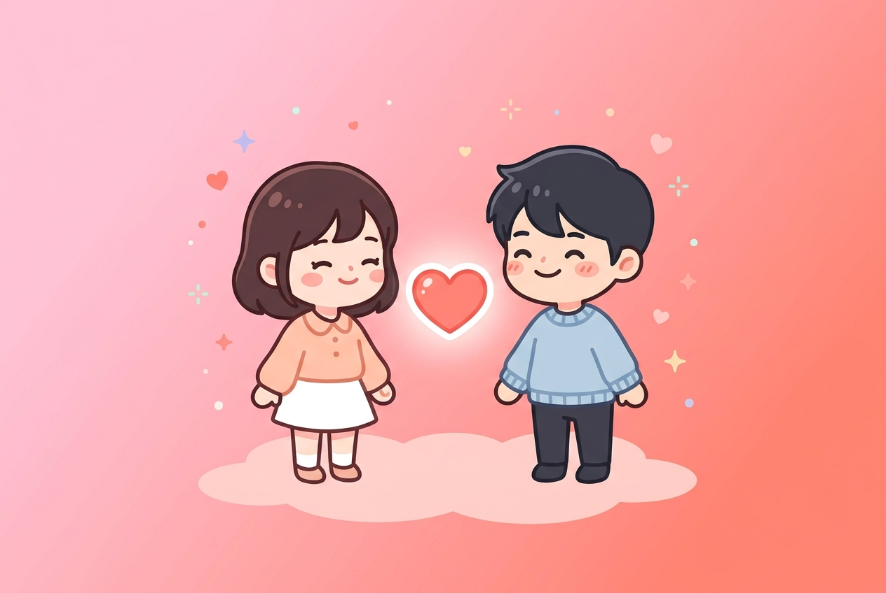

연애 오래가는 커플들의 4가지 공통 특징: 사랑을 지속시키는 심리학의 비밀
발행일: 2026.08.19 · 테스트모음 편집부

모든 연애는 달콤한 설렘으로 시작하지만, 시간이 흐를수록 권태와 갈등이라는 시험대에 오르게 됩니다. 심리학자 존 가트맨(John Gottman) 박사의 40년 연구에 따르면, 오랜 시간 동안 변함없이 사랑을 유지하는 커플들에게는 명확한 대화와 상호작용의 패턴이 존재합니다.
1. '비난' 대신 '나 전달법(I-Message)'을 쓴다
오래가는 커플은 상대방의 인격을 공격하는 말("너는 왜 항상 그래?") 대신, 자신의 감정과 필요를 표현하는 나 전달법("네가 늦어서 내가 걱정되고 서운했어")을 사용합니다. 이는 상대방의 방어기제를 자극하지 않고 문제를 해결하는 핵심 열쇠입니다.
2. 5:1의 긍정 상호작용 비율 유지
가트맨 박사의 연구 결과에 따르면, 안정적인 관계를 유지하는 커플은 1번의 부정적인 감정 표현이 있을 때 최소 5번 이상의 긍정적인 표현(칭찬, 감사의 인사, 가벼운 스킨십, 미소)을 나눕니다. 사소한 호의가 관계의 회복 탄력성을 높입니다.
3. 서로의 연애 성향과 애착 유형을 인정한다
상대방을 나와 똑같이 바꾸려 하지 않고, 서로의 고유한 성향(MBTI, 회피형/불안형 애착)을 인정하는 태도가 필요합니다. 혼자만의 시간이 필요한 사람에게 여유를 주고, 확인이 필요한 사람에게 확신을 주는 상호 배려가 관계를 튼튼하게 만듭니다.
4. 함께하는 새로운 경험과 질문을 멈추지 않는다
익숙함이 권태로 이어지지 않으려면 일상 속에서 작고 새로운 자극을 함께 시도해야 합니다. '커플 백문백답'이나 '대화 카드'처럼 평소 나누지 못했던 깊은 속마음을 이야기하는 시간은 관계에 신선한 생명력을 불어넣어 줍니다.